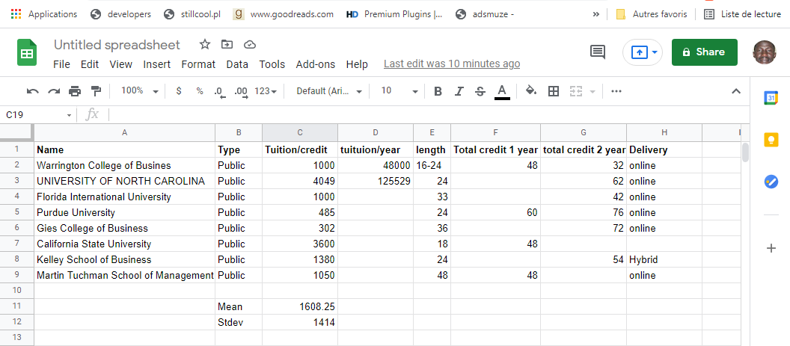
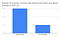
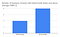

Estimating online MBAs brands for business school valuation
Another valuation methodology for long-term value investors

when alternative MBAs price their programs, they are cutting the value of the brand of established traditional MBAs like Harvard business school,,, and Standford Sloan that they estimated in their minds or using business valuation engine if they have one.
This is what almost every entrant who competes using a low-cost strategy does, cuts out features that he thinks a portion of the target company customer base could live without and trying to bargain with the value that he estimates that this segment assigns to these missing features or by estimating the price surplus which he thinks that it is resulting from the value of the brand of the company which he tries to disrupt its cost structure. Sometimes the cost disruptor does these two methods at the same time. We could use this fact for valuing a company by estimating the value of its brand using the value and pricing of the companies competing with a cost strategy.
I have chosen the education market as the first draft of this valuation methodology that can be modeled and automated but if the time allows me, I will go into other sectors using a more general methodology of valuation that will use more precise and sophisticated statistical tools.
with the case of alternative fully digital MBA programs, one of the features which are cut out is the need for physical presence. This lead to the offering of online programs. Many business schools, with the surge of online learning, have designed online MBA programs in order to expand their reach and target people like me and you who could not attend physical courses. I have chosen some of these online MBAs programs with the tuition per credit they ask and here below is the simple table I got

With the table, you can see that we have an average tuition per credit of $1608.25 and a standard deviation of this tuition per credit of more or less than $1414.
If we count the number of business schools with tuition per credit’s value below and above the average value here is what we get

WE can see that only two business schools are standing above the average tuition per credit value of $1608.25 and these schools are COLLEGE OF EXTENDED AND GLOBAL EDUCATION of the University of California and KENAN-FLAGLER BUSINESS SCHOOL of the University of North Carolina. These two universities are pricing their MBA programs expensively comparing to the others school of the dataset which I should remind that it is a dataset of 9 of the most affordable online MBA. I will enrich the dataset with other data points of other brick-and-mortar MBAs like those offered by Harvard University.
These two business schools are pricing their MBA programs way too high compared to the others and these prices premium is made of the possible higher operating cost of these schools plus the value that they give to the brand of their program.
if we exclude these two business schools that have premium MBA program prices we end with an average tuition per credit of $869.5 and a standard deviation of $399.
The value of This tuition per credit can be seen as the value of an online MBA without the additional cost of operating and the value of school brands meaning the value of the business materials offered by these schools. With this reduced dataset, we have still two business schools that are pricing their MBA programs way below the average that we are trying to associate with the value of the online materials of an MBA program. These two schools are Perdue University and Gies College of business. Of course, it is easy to price cheap the material of an online course because the marginal cost of designing digital content is almost zero. More about Marginal cost here.

For simplicity, let's consider that the additional value beyond the average tuition per credit value is associated only with the value of the brand of the business school because with online learning we could say that all these schools have almost the same operating cost. The cost of operating an online platform is correlated to the number of users (students and teachers) of the online learning platform and these schools don’t have the same number of online students neither the same number of teachers but we could neglect the operating cost here and correlate directly the additional price with the value that the school is attaching to its brand. In such a simple model, we could say that the value that makes the tuition per credit be greater than the average price is the value that the business school is giving to its brand which is the reputation and awareness that its MBA degree provides to the students. Here below is the table the provide these first estimations (very simple and overestimated) of the brand value of these business school that we have used as examples
there are thousands of business schools out there and we normally should take all of them and get their tuition per credit in order to come up with a much more precise estimation of the brand value that each of these business schools is associating with their MBA programs.
In the simple model as an example that I have provided above, I have chosen the most affordable online MBA and I neglected the cost of operating a business school which normally is reflected in the final tuition per credit. In order to take into account this cost of operating we are going to analyze the cost of the Brick and Mortar MBAs like Harvard Business school and others.
PS: Being eager to publish something because I have committed to do it made me cut this article into two or more parts. I the coming part I will be going more into the details and using more Business schools and estimation methodologies. This genre of article like those about attention-driven valuation is like the kind of article that I am planning to write and publish soon in SeekingAlpha. Hope I will have time and enough resources to go deeper into all these articles.
Writing this article has highlighted me an important tech-enabled product for universities and business schools because it is obvious that more and more people like me will be less comfortable and inspired using a pen for writing then it makes sense to take all these business school and university tests with a screen and a keyboard rather than a paper and a pen